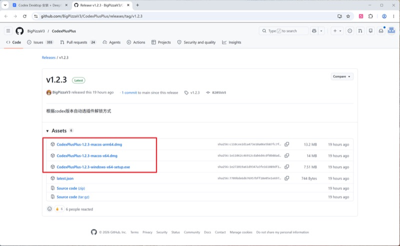
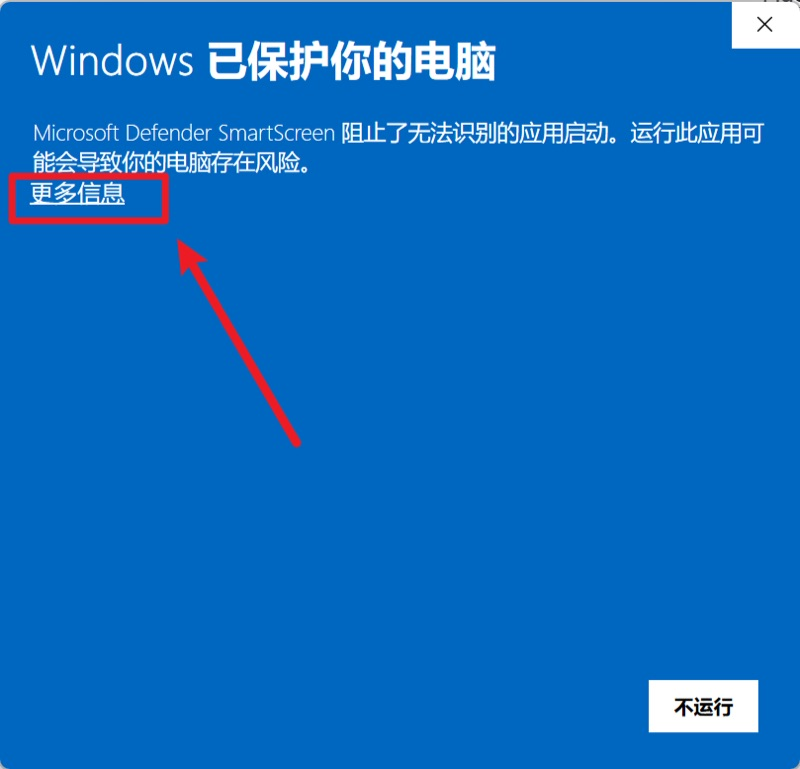
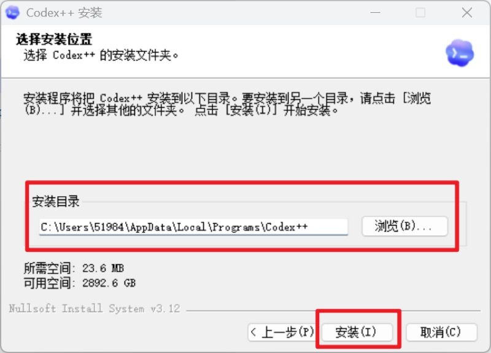
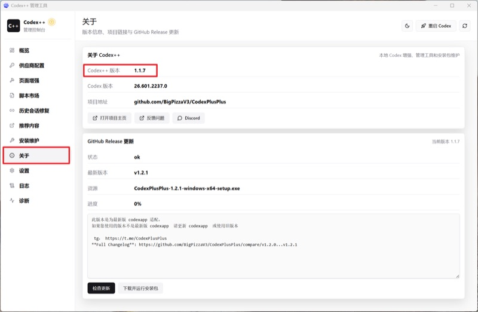
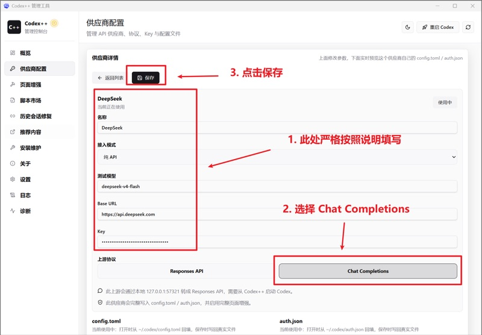
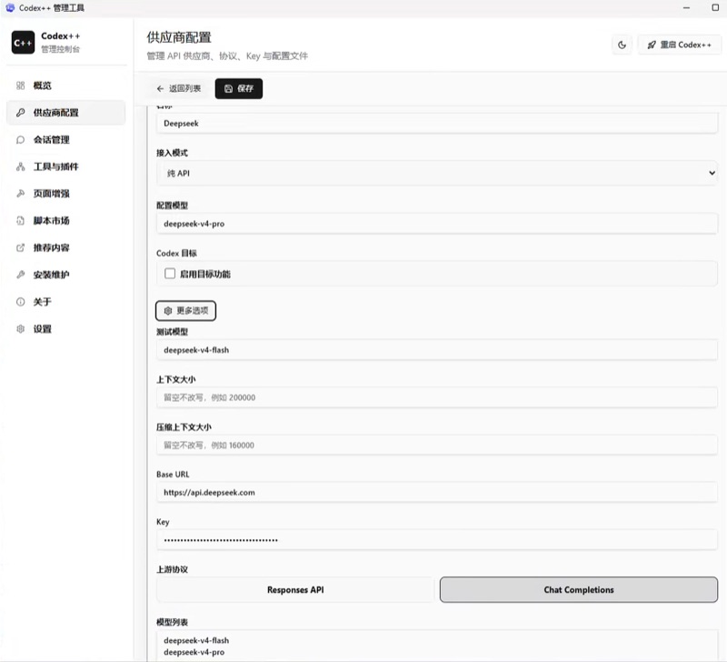
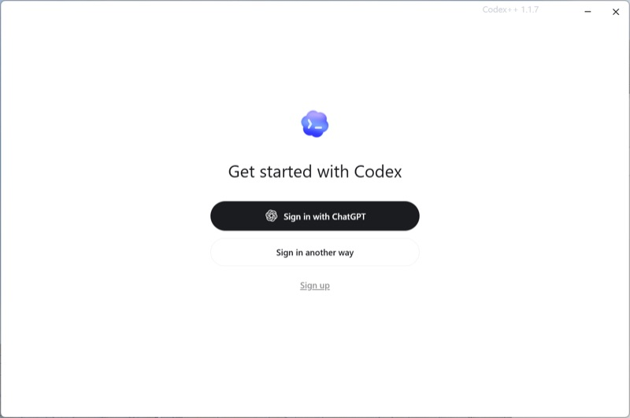
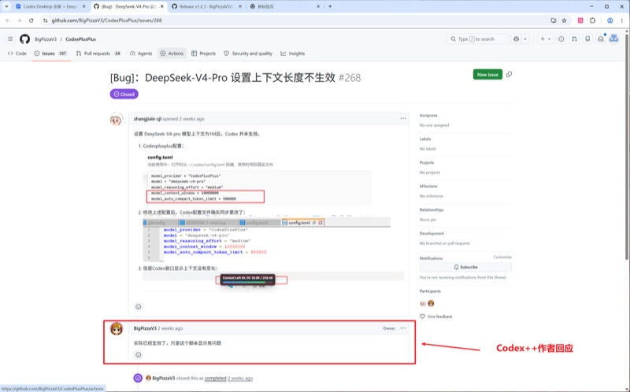
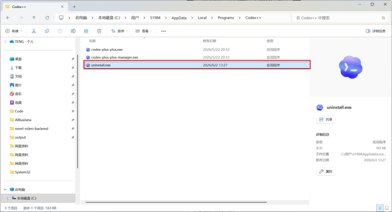
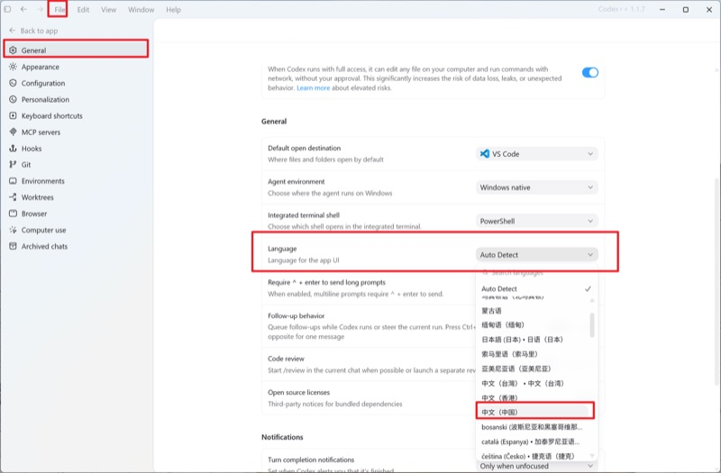

一、Codex Desktop 简介
Codex Desktop 是一款功能强大的桌面端 AI 编程助手，支持接入多种大语言模型（LLM）后端。 与网页版或终端版本不同，桌面版提供了更丰富的图形界面操作、项目管理和本地配置能力， 让开发者可以在统一的界面中切换不同的模型服务。
主要特性包括：
- 支持接入多个模型后端（OpenAI、Claude、DeepSeek、Ollama 等）
- 内置代码编辑器，支持语法高亮与智能补全
- 多会话管理，可在不同对话之间快速切换
- 本地配置文件管理，无需每次手动输入密钥
- 跨平台支持（Windows、macOS、Linux）
二、系统要求
| 平台 | 最低版本要求 |
|---|---|
| Windows | Windows 10 及以上，64 位 |
| macOS | macOS 12 (Monterey) 及以上 |
| Linux | Ubuntu 20.04+ / Debian 11+ (x86_64) |
建议内存 8GB 以上，硬盘剩余空间至少 500MB。
三、下载与安装
3.1 下载
访问 Codex Desktop 官方网站下载对应平台的安装包：
- Windows：下载
.exe安装程序 - macOS：下载
.dmg磁盘映像文件 - Linux：下载
.AppImage或.deb包

3.2 Windows 安装步骤
- 双击下载的
.exe安装程序 - 如出现安全警告，点击"运行"继续
- 选择安装路径（默认路径即可）
- 勾选"创建桌面快捷方式"（可选）
- 点击"安装"，等待进度条完成
- 安装完成后，勾选"启动 Codex Desktop"并点击"完成"

3.3 macOS 安装步骤
- 双击下载的
.dmg文件挂载磁盘映像 - 将
Codex Desktop.app拖拽到Applications文件夹 - 首次打开时，在 Finder 中右键点击应用，选择"打开"
- 在弹出的安全提示中点击"打开"确认
- 应用程序将出现在启动台中

3.4 Linux 安装步骤
- 若使用
.AppImage：
chmod +x Codex-Desktop-*.AppImage
然后双击运行或终端执行./Codex-Desktop-*.AppImage - 若使用
.deb：
sudo dpkg -i codex-desktop_*.deb
四、初始配置
首次启动 Codex Desktop 后，会进入欢迎引导页面。你需要完成以下基础设置：
- 选择界面语言 — 支持中文和英文
- 设置主题 — 提供浅色和深色两种主题
- 配置数据目录 — 用于存储对话记录和项目文件（建议使用默认路径）
- 登录或跳过 — 可以选择直接跳过，以本地模式使用
完成引导后，进入主界面。主界面左侧为会话列表，中间为对话区域，右侧为上下文面板。

五、接入 DeepSeek API
这是本手册的核心步骤。DeepSeek 提供高性价比的大模型 API 服务， 将其接入 Codex Desktop 后即可在图形界面中使用 DeepSeek-V3、DeepSeek-R1 等模型。
5.1 获取 DeepSeek API Key
- 打开浏览器，访问 DeepSeek 开放平台：
https://platform.deepseek.com - 注册或登录你的 DeepSeek 账号
- 进入控制台，点击左侧菜单中的 "API Keys"
- 点击 "创建 API Key"，输入一个便于识别的名称（如 "Codex-Desktop"）
- 创建成功后，立即复制并保存 API Key（格式为
sk-xxxxxxxxxxxxxxxx）

5.2 在 Codex Desktop 中配置 DeepSeek
- 打开 Codex Desktop，点击左下角的 设置 图标（齿轮）
- 在设置面板中，选择 "模型服务" 或 "Providers" 标签
- 点击 "添加提供商" 或 "+ Add Provider"
- 在提供商列表中找到并选择 "DeepSeek"
- 填写以下配置信息：
| 配置项 | 填写内容 | 说明 |
|---|---|---|
| API Key | sk-xxxxxxxxxxxxxxxx |
在 DeepSeek 平台获取的密钥 |
| Base URL | https://api.deepseek.com |
DeepSeek 官方 API 地址 |
| API 版本 | v1 或 /v1 |
使用 OpenAI 兼容接口格式 |

填写完成后，点击 "测试连接" 或 "保存" 按钮。
如果配置正确，界面会显示"连接成功"，并自动列出可用的 DeepSeek 模型列表。
5.3 可用模型说明
DeepSeek 目前提供以下主要模型：
| 模型名称 | 特点 | 适用场景 |
|---|---|---|
deepseek-chat (V3) |
综合能力强，速度较快 | 日常编程、文本生成、通用对话 |
deepseek-reasoner (R1) |
深度推理能力，思考链透明 | 复杂算法、数学推理、代码审查 |

deepseek-chat 即可获得快速响应；
遇到复杂逻辑或需要深度分析的场景，切换到 deepseek-reasoner。
两个模型可按需在对话中切换，无需重新配置。
六、使用与测试
配置完成后，按以下步骤验证一切正常：
- 在 Codex Desktop 主界面，点击 "新建对话"
- 在模型选择下拉菜单中，选择刚刚配置的 DeepSeek 模型（如
deepseek-chat） - 输入一段简单的测试提示词，例如：
"请用中文简要介绍一下你自己" - 点击发送，观察模型是否能正常返回回复

如果模型正常回复，说明 DeepSeek 接入已完全成功！
七、常见问题与排查

Q1：测试连接时提示"连接失败"或"API Key 无效"
- 检查 API Key 是否完整复制，没有多余空格或遗漏字符
- 确认 API Key 是否还有余额，可在 DeepSeek 控制台查看用量
- 检查 Base URL 是否正确：
https://api.deepseek.com - 确认网络环境能正常访问
api.deepseek.com
Q2：模型列表中看不到 DeepSeek 模型
- 确认已保存配置并点击了"刷新模型列表"按钮
- 尝试重启 Codex Desktop 后再次查看
- 检查设置中的"模型服务"页是否正确启用了 DeepSeek
Q3：模型回复速度很慢
- DeepSeek 免费/低价 API 在高峰期可能有排队，等待片刻即可
- 在设置中确认未开启"代理/VPN"，直连通常更稳定
- 若持续缓慢，可联系 DeepSeek 客服或考虑升级 API 套餐
Q4：对话中出现乱码或截断
- 检查 Codex Desktop 是否为最新版本，尝试更新到最新版
- 在设置中适当调大
max_tokens（最大输出长度）参数 - 切换模型重试，确认是否为特定模型的问题
八、进阶配置
熟练使用基础功能后，可以进一步探索以下进阶配置：

- 多模型并行：同时接入 OpenAI、Claude、DeepSeek 等多个后端，在不同场景下灵活切换
- 自定义 System Prompt：为每个模型预设系统提示词，定制助手的行为风格
- 本地模型接入：通过 Ollama 等工具运行本地模型，实现完全离线使用
- 快捷键绑定：自定义常用操作的键盘快捷键，提升使用效率
- 项目级配置：为不同项目绑定不同的默认模型和提示词模板